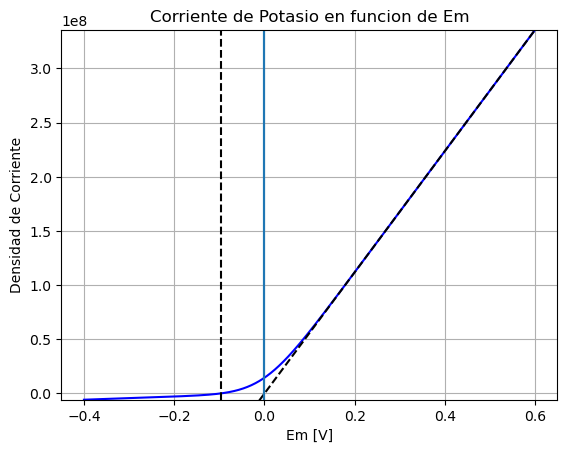
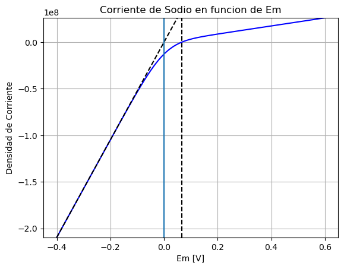
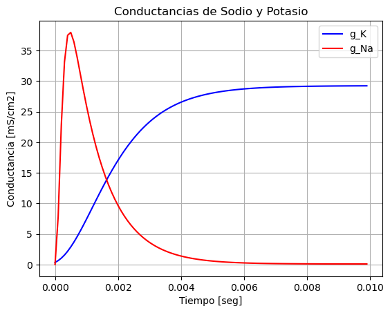
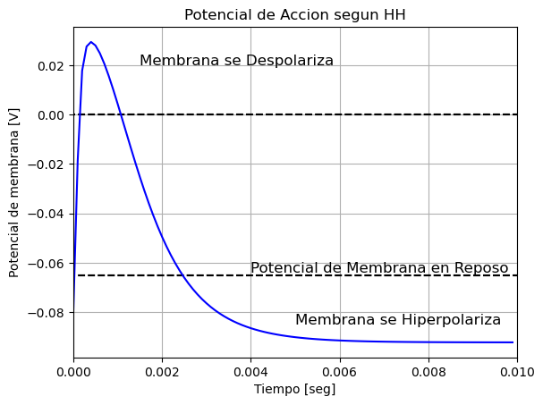

Corrientes transmembrana y Modelo de Hodgkin y Huxley para el Potencial de Accion
Contents
Corrientes transmembrana y Modelo de Hodgkin y Huxley para el Potencial de Accion#
import matplotlib.pyplot as plt
import pandas as pd
import numpy as np
Corrientes de iones a traves de la membrana#
Potasio K
# Constantes
R = 8.314 # Constante de los gases
F = 9.649E4 # Faraday
T = 310 # temperatura absoluta del cuerpo humano, 37 grados centigrados
z = +1 #Carga
Ci_K = 155 # concentracion interna de Potasio
Co_K = 4 # concentracion externa de Potasio
E_K = -97E-3 # Potencial de equilibrio del Potasio
Em = np.arange(-400E-3, 600E-3, 1E-3) # Potencial de membrana en mV
# Utizando la Ecuacion de corriente de Goldman-Hodgkin-Katz
I_K = ((z**2)*(F**2)/(R*T))*Em*(Ci_K - Co_K*np.exp((-z*F/(R*T))*Em))/(1 - np.exp((-z*F/(R*T))*Em)) # Corriente de Potasio
# Coriente siguiendo la ley de Ohm APROXIMADA
I_K_ohm = np.max(I_K)/np.max(Em)*Em
# create a figure and axis
fig, ax = plt.subplots()
# line plot
ax.plot(Em, I_K,c='b')
ax.plot(Em, I_K_ohm,'k--')
ax.vlines((0,0), ymin=np.min(I_K), ymax=np.max(I_K))
ax.vlines(E_K, ymin=np.min(I_K), ymax=np.max(I_K), linestyles="dashed", colors="k")
#Titulo
ax.set_title('Corriente de Potasio en funcion de Em')
#Etiqueta del exe X
ax.set_xlabel('Em [V]')
#Etiqueta del exe Y
ax.set_ylabel('Densidad de Corriente')
ax.set_ylim([np.min(I_K), np.max(I_K)])
ax.grid()
ax.set_axisbelow(True)
plt.show()

Sodio Na
z = +1 #Carga
Ci_Na = 12 # concentracion interna de Sodio
Co_Na = 145 # concentracion externa de Sodio
E_Na = 66E-3 # Potencial de equilibrio del Sodio
Em = np.arange(-400E-3, 600E-3, 1E-3) # Potencial de membrana en mV
# Utizando la Ecuacion de corriente de Goldman-Hodgkin-Katz
I_Na = ((z**2)*(F**2)/(R*T))*Em*(Ci_Na - Co_Na*np.exp((-z*F/(R*T))*Em))/(1 - np.exp((-z*F/(R*T))*Em)) # Corriente de Potasio
# Coriente siguiendo la ley de Ohm APROXIMADA
I_Na_ohm = np.min(I_Na)/np.min(Em)*Em
# create a figure and axis
fig2, ax2 = plt.subplots()
# line plot
ax2.plot(Em, I_Na,c='b')
ax2.plot(Em, I_Na_ohm,'k--')
ax2.vlines((0,0), ymin=np.min(I_Na), ymax=np.max(I_Na))
ax2.vlines(E_Na, ymin=np.min(I_Na), ymax=np.max(I_Na), linestyles="dashed", colors="k")
#Titulo
ax2.set_title('Corriente de Sodio en funcion de Em')
#Etiqueta del exe X
ax2.set_xlabel('Em [V]')
#Etiqueta del exe Y
ax2.set_ylabel('Densidad de Corriente')
ax2.set_ylim([np.min(I_Na), np.max(I_Na)])
ax2.grid()
ax2.set_axisbelow(True)
plt.show()

Como sera la densidad de corriente para el Cloro (Cl)?
Modelado de las conductancias de Sodio y Potasion segun Hodgkin y Huxley#
Conductancia de Potasio#
Considerando un Voltage Clamp entre -65mV y +23mV
#Coeficientes del modelo para la conductancia de Potasio
n_inf = 0.9494
n_0 = 0.3177
T_n = 1.2028E-3 # [ms]
gK_max = 36 # ms/cm2
# tiempo
t = np.arange(0, 10E-3, 0.1E-3)
#
n = n_inf - (n_inf - n_0)*np.exp(-(t/T_n))
# Corriente de Potasio: IK = n^4*gK_max*(Em-EK), por ende la conductancia:
gK = n**4*gK_max
Conductancia de Sodio#
Considerando un Voltage Clamp entre -65mV y +23mV
#Coeficientes del modelo para la conductancia de Sodio
m_inf = 0.9953
m_0 = 0.0529
T_m = 0.1577E-3 # [ms]
h_inf = 0.0009
h_0 = 0.5961
T_h = 1.0022E-3 # [ms]
gNa_max = 120 # ms/cm2
# tiempo
t = np.arange(0, 10E-3, 0.1E-3)
#
m = m_inf - (m_inf - m_0)*np.exp(-(t/T_m))
h = h_inf - (h_inf - h_0)*np.exp(-(t/T_h))
# Corriente de Sodio: INa = m^3*h*gNa_max*(Em-ENa), por ende la conductancia:
gNa = m**3*h*gNa_max
# create a figure and axis
fig3, ax3 = plt.subplots()
# line plot
ax3.plot(t, gK,c='b', label="g_K")
ax3.plot(t, gNa,c='r', label="g_Na")
ax3.legend()
#Titulo
ax3.set_title('Conductancias de Sodio y Potasio')
#Etiqueta del exe X
ax3.set_xlabel('Tiempo [seg]')
#Etiqueta del exe Y
ax3.set_ylabel('Conductancia [mS/cm2]')
ax3.grid()
plt.show()

Potencial de Accion (aproximado)#
Se utiliza la ecuacion del potencial de membrana utilizando la conductancia instante a instante
#Potencial de membrana
E_Na = 66E-3 # Potencial de equilibrio del Sodio
E_K = -97E-3 # Potencial de equilibrio del Potasio
E_Cl = -80E-3 # Potencial de equilibrio del Cloro
#Conductancia del canal de Cloro
gCl = 10 # ms/cm2
suma_g = gNa + gK + gCl
Em = gNa/suma_g*E_Na + gK/suma_g*E_K + gCl/suma_g*E_Cl
# create a figure and axis
fig4, ax4 = plt.subplots()
# line plot
ax4.hlines((0,0), xmin=-0.01, xmax=0.015, linestyles="dashed", colors="k")
ax4.hlines((-0.065,-0.065), xmin=-0.01, xmax=0.015, linestyles="dashed", colors="k")
ax4.plot(t, Em,c='b')
#Titulo
ax4.set_title('Potencial de Accion segun HH')
#Etiqueta del exe X
ax4.set_xlabel('Tiempo [seg]')
#Etiqueta del exe Y
ax4.set_ylabel('Potencial de membrana [V]')
ax4.set_xlim([0,0.010])
ax4.text(0.0015, 0.02, 'Membrana se Despolariza', fontsize=12)
ax4.text(0.005, -0.085, 'Membrana se Hiperpolariza', fontsize=12)
ax4.text(0.004, -0.064, 'Potencial de Membrana en Reposo', fontsize=12)
ax4.grid()
plt.show()

Hacer un grafico en el que se pueda visualizar las conductancias y el potencial de membrana juntos.